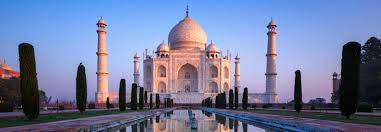
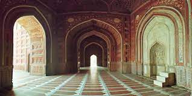
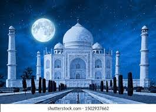
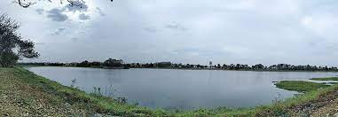
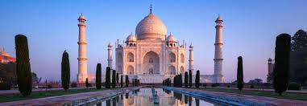
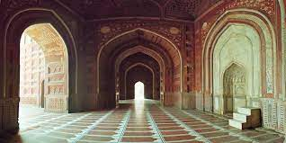
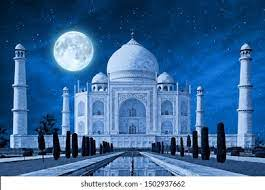
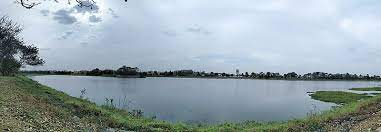

About the Taj Mahal
The Taj Mahal is an ivory-white marble mausoleum on the south bank of the Yamuna River in the Indian city of Agra. It was commissioned in 1632 by the Mughal emperor, Shah Jahan, to house the tomb of his favorite wife, Mumtaz Mahal. The Taj Mahal is a UNESCO World Heritage Site and is considered one of the New Seven Wonders of the World.
History of the Taj Mahal
Construction of the Taj Mahal began in 1632 and was completed in 1648. The architectural beauty of the monument, the intricate designs, and the emotional story behind its creation make it a significant symbol of love and architectural brilliance.
Plan Your Visit
If you're planning a trip to the Taj Mahal, consider the best time to visit, ticket prices, nearby accommodations, and other essential information to make your trip memorable.
Good time to Visit
The best time to visit the Taj Mahal is during the cooler and drier months of the year to ensure a more comfortable and enjoyable experience. Generally, the ideal months are between October and March when the weather in Agra, where the Taj Mahal is located, is cooler. October to March marks the winter season in India, with pleasant temperatures ranging from around 50°F (10°C) to 77°F (25°C). The cooler weather during these months makes it more conducive for sightseeing and exploring the monument without having to endure extreme heat. November to February is especially popular due to milder temperatures and clearer skies. However, this period is also the peak tourist season, so the site might be more crowded. The months immediately following the monsoon season (July to September) can also offer lush greenery, but it might be humid and there can be occasional showers. April and May are very hot in Agra, with temperatures often exceeding 100°F (38°C), so these months are generally avoided by many tourists. Considerations for travel during the COVID-19 pandemic or any other prevalent health issues are also crucial. It's advisable to check the latest travel advisories, any specific entry requirements, and health-related guidelines before planning your visit to the Taj Mahal or any travel destination.